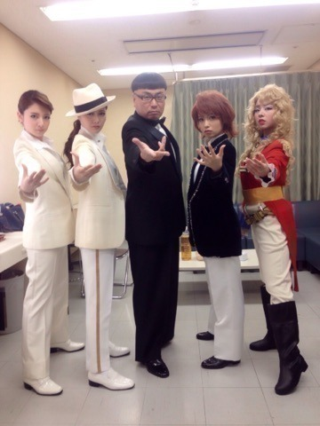

こんにちわ（＾ν＾） ろってぃーだよ？まにだよ？ 1週間ぶりのblogになっちゃったね.＊てへ とりあえずこれだね。。。 乃木の塚歌劇団 ）））
真ん中オスカルですよ。オスカル。。。笑 完全に 私だけネタです。 NOGIBINGOーーー！！！ 本当にこの回の収録は楽し過ぎました。笑 スタンバイ中から 周りのスタッフさんや乃木の塚の仲間達に笑われるから、 もうね～ 最初の入場シーンでは笑いこらえるので必死でした（＾ω＾） 本当に メイクすごいですよね。感動。
しかもちーちゃんの はまり感はんぱないですよね(*^^*)笑 メンバー達がオスカルを気に入ってくれたのか、今だにオスカル ネタでいじられます。(*^^*)へへ 泣くのは～ ♪ およし。 君に～ なみだは～ 似合わ～ないよ。笑 やばいよね。笑
ーーーーーーーーーーーー そして昨日は 富士急で「沈黙の金曜日」の公開収録がありました！ 私、お笑いが好きでアルコ＆ピースさんのネタとかも見ていたんで、アルピーさんにお会いできて本当に嬉しかったです♪うぎうぎ。 公開収録は トーク挟みつつで、 あの日僕は咄嗟に嘘をついた/ガールズルール/何度目の青空か？ の3曲を披露しました。 寒い中 早くから来てくださったファンの皆さん、本当にありがとうございました（＾ω＾） 野外だったので、私の眩しがりや発揮してしまいました。（ ; ; ）笑 本当に私、コンタクトとか何もつけてないのに、それでも太陽が目の前にあると眩しくて なかなか普通に目開けれないんですヾ(＠⌒ー⌒＠)ノ あ～ アトラクション乗りたかったな。。。 笑 またいつか、いつになるか分かんないけど、プライベートで行こう。笑 ということで またblog更新します.＊ 